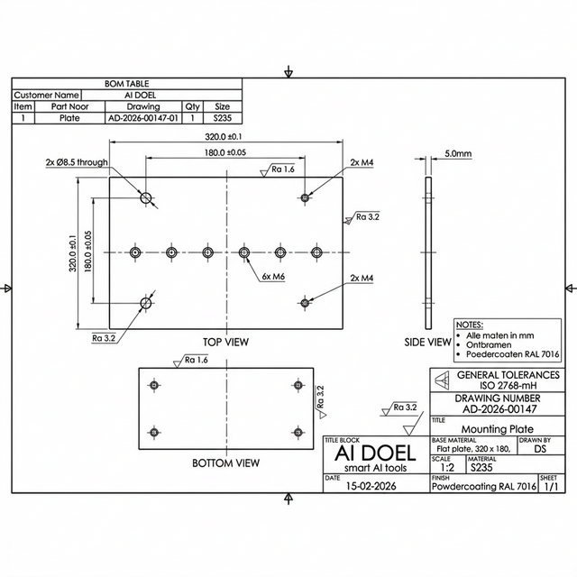

Onze AI leest technische tekeningen automatisch uit en extraheert alle relevante productiedata — onderdeelnummers, gaten, toleranties, materialen en meer.
Van PDF-upload tot kant-en-klare productiedata, zonder handmatig overtypen.
Technische tekeningen als PDF aanleveren — enkel of als batch van een hele order.
Gemini AI Vision analyseert elke tekening: dimensies, gaten, materiaal, oppervlaktebehandelingen.
Gestructureerde data wordt geëxtraheerd met automatische validatie en operator-waarschuwingen.
Kant-en-klare XML output, direct importeerbaar in uw ERP- of productiesysteem.
Het systeem herkent automatisch voor welke klant de tekening is en past de configuratie aan. Per klant worden specifieke regels geladen voor oppervlaktebehandelingen, materialen en waarschuwingen.
Eerste pagina van de order wordt geanalyseerd
BOM-tabel en titelblok worden visueel gelezen door AI
Klantnaam gevonden, specifieke config wordt geladen
Klant-specifieke regels voor extractie en waarschuwingen
Een technische tekening gaat erin, gestructureerde productiedata komt eruit — inclusief automatische klantherkenning.

De AI is volledig configureerbaar per klant. U kiest welke data relevant is voor uw productieproces. Enkele voorbeelden van wat er geëxtraheerd kan worden:
Automatische herkenning van part numbers, revisienummers en artikelcodes uit het titelblok.
Detectie van boorgaten, tapgaten (M4, M6, M8), doorvoergaten en bijbehorende toleranties.
Herkenning van materiaalsoorten zoals S235JR, RVS 304, aluminium en specificaties.
Identificatie van coatings: powdercoating, verzinken, parelstralen, anodiseren en RAL-kleuren.
Automatische waarschuwingen voor tapgaten, kritieke dimensies en speciale bewerkingen.
Extractie van hoofd-afmetingen, plaatdiktes, radii en geometrische specificaties.
Getest op 1000+ echte technische tekeningen uit uiteenlopende orders.
Neem vrijblijvend contact op. We laten u graag zien wat er mogelijk is.
Start het gesprekGeen verplichtingen · Gratis eerste gesprek · Direct resultaat